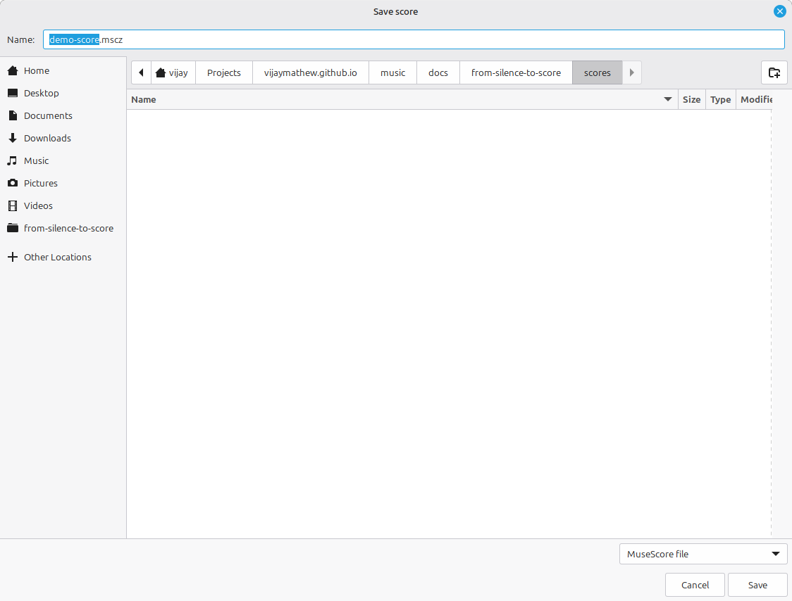
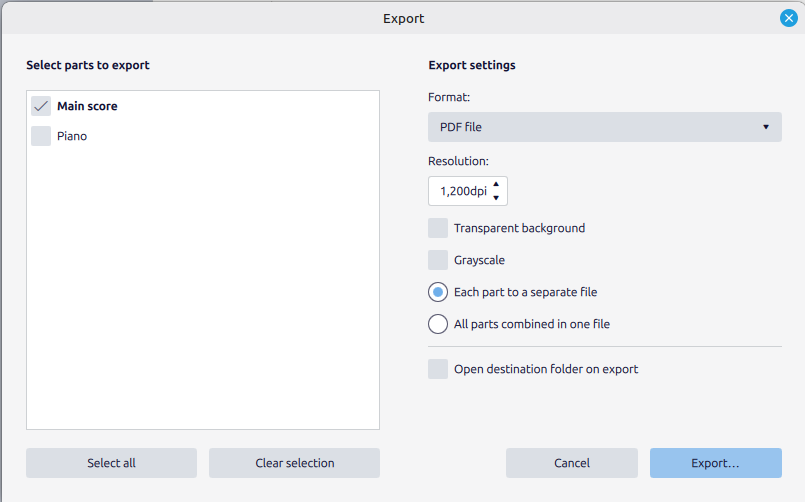

Work you cannot save is not work; it is a rehearsal. This last setup chapter is about getting music out of MuseScore — into a file you can reopen, a PDF someone can read, a MusicXML another program can import, an audio file someone can play. Each format keeps something different and throws the rest away, and knowing which is which saves you from the classic mistake: sending someone a file they cannot use, or losing the editable original behind an export.
4.1The project file: .mscz
MuseScore’s own format is .mscz, and it is the only file that holds everything — every note, the layout, the instruments, the sounds, your unfinished edits. This is your master copy. Save early and often with Ctrl+S (Cmd+S on macOS); the first save asks where.

.mscz. This is the format to save in — the editable original that every export is generated from.The rule that prevents the most grief: the .mscz is the thing you keep. PDFs and audio are derived from it, the way a print is derived from a negative, and like a print they cannot be turned back into the original. Give one folder to each piece and keep its .mscz there; when you export a PDF or a recording, it is a copy sent outward, never a replacement for the master.
(You will also see .mscx — the same score as uncompressed XML, occasionally useful for version control or inspection — and MuseScore keeps periodic backups next to your file. For everyday work, .mscz is all you need.)
4.2Exporting: PDF, MusicXML, audio
Everything else leaves through File ▸ Export. The Export dialog gathers the outbound formats in one place.

The three that matter, and what each keeps:
- PDF is for reading. It is a picture of the printed page — perfect for handing a performer something to play from, useless if they need to edit it. Print-fidelity in, no editability out.
- MusicXML (
.musicxml) is for exchange. It is the universal interchange format that every notation program reads and writes, so it is how you move a score from MuseScore to Finale, Sibelius, Dorico, or a collaborator’s setup. It preserves the notes and most notation, though fine engraving details may shift between programs. (It is also the format this book’s own examples are generated from.) - Audio — MP3 or WAV — is for listening. It renders the playback you hear into a sound file anyone can play without MuseScore. MP3 is smaller and fine for sharing; WAV is uncompressed and larger. Either way it captures the sound, not the notation — there is no getting a score back out of an MP3.
Pick the format for the job: a player needs a PDF, another notation program needs MusicXML, someone who just wants to hear it needs an MP3. And none of them replaces the .mscz you saved first.
4.3A sane way to organize
Set up a habit now and it will hold for the whole book, whose projects deliberately build on one another. One folder per piece. Inside it, the .mscz is the source of truth; exports live alongside it or in an exports/ subfolder so they never get confused with the original. Name files so their order is obvious — little-tune-01-melody.mscz, little-tune-02-harmonized.mscz — because in Part 3 you will reopen the melody you wrote in Part 1, and in Part 7 you will orchestrate it, and you will be grateful the lineage is legible.
That is Part 0. MuseScore is installed, you can name every part of its window, you can type a line of music into it and hear it back, and you can save the result and send it out in the right format. The tool is now in your hands and, from the next chapter on, out of your way. Turn the page: Part 1 begins at the staff itself.